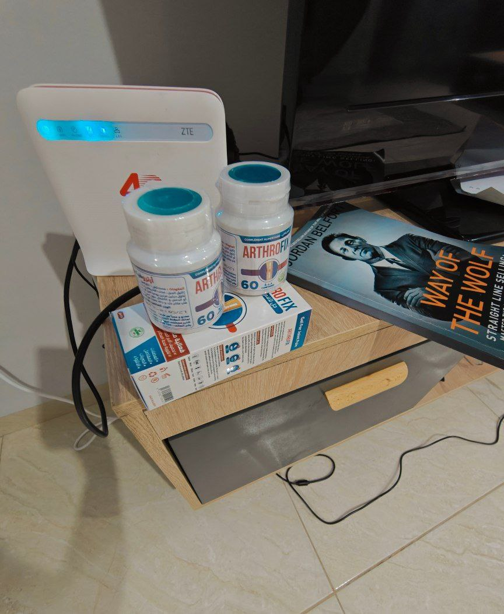
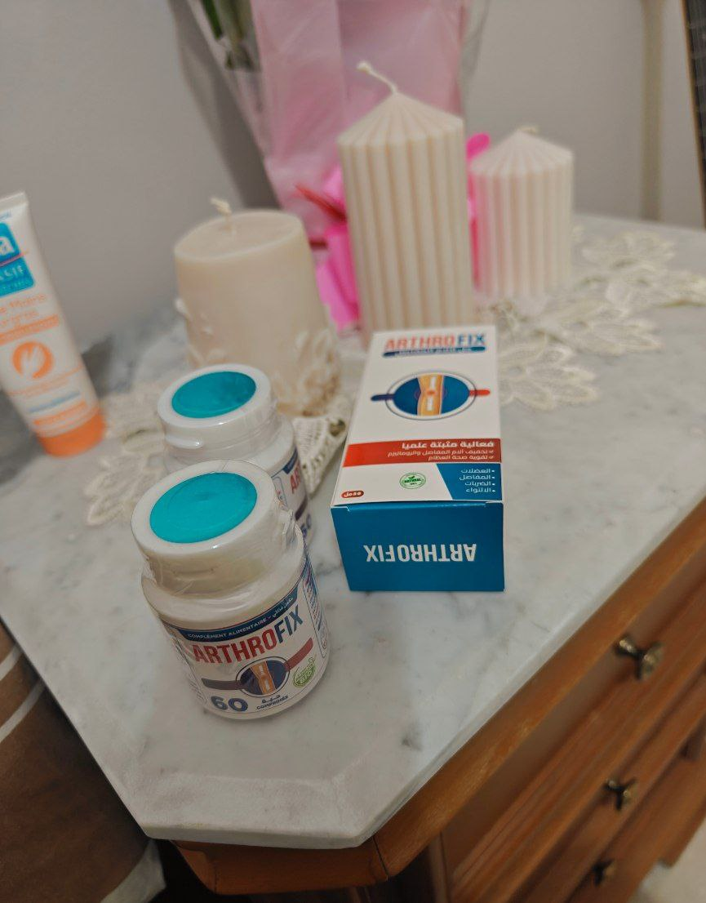
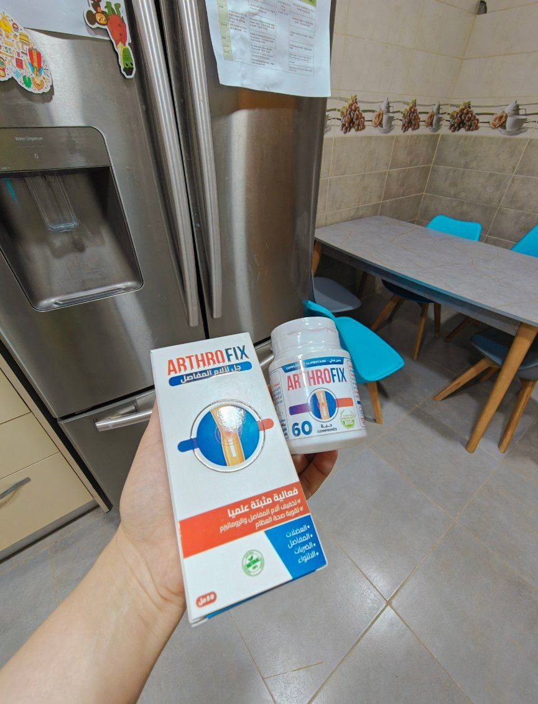

"متقاعدة تبلغ من العمر 72 عامًا تروي كيف تغلبت على آلام المفاصل وشاركت في سباق ماراثون 42 كيلومترًا."
الكثير من الناس لا يعرفون الطريقة الصحيحة للتعامل مع مشاكل المفاصل، بعض المنتجات الكيميائية المستخدمة للتخلص من مشاكل المفاصل تتحكم في هذه المشاكل بشكل مؤقت فقط وليس لها فعالية كبيرة لأنها لا تزيل سبب مشاكل المفاصل.
أوليفيا تيموثي شاركت في 11 سباق ماراثون، فازت بكأسين وثماني ميداليات في المسابقات الدولية.
"في سن 72، أوليفيا هي شخص قوي، مجتهد وبصحة أفضل من الكثير من الرجال والنساء في الأربعينيات من العمر، لكن صحتها لم تكن دائمًا جيدة."
"رغم أن أوليفيا كبيرة بالسن إلا أنها عاشت لسنوات عديدة بحياة صحية و نشيطة . في سن الأربعين، بدأت تعاني من آلام في المفاصل. في سن الثانية والأربعين، قررت إجراء فحص طبي: تم تشخيصها بـ "إلتهاب المفاصل و الداء لعظمي الغضروفي ". في سن الثامنة والستين، تم تشخيص حالتها بـ "" في الورك وأصبحت معاقة. تأثرت مفاصلها بشكل كبير وكانت تمشي بصعوبة باستخدام عصا."
"وفقًا لمنظمة الصحة العالمية، تؤدي المفاصل المتضررة إلى 91% من المشاكل الصحية بالجسم . بدءًا من مشاكل الأمعاء وصولاً إلى السكتة الدماغية والنوبات القلبية."
"لم يكن معاشها التقاعدي كافيًا لتغطية تكاليف العلاج الباهظة. ومع ذلك، قررت فعل كل ما بوسعها للتعامل مع المشكلة وتقليل الألم. بعد عامين، وجدت طريقة فعالة للتحكم في مشاكل المفاصل وفي سن السبعين، تحسنت قدرة مفاصلها على العمل. المختص المتابع لحالتها كان مذهولاً من تحسن صحتها: الآن يمكن لهذه السيدة ممارسة الرياضة أو الركض، لديها القدرة على أن تصبح بطلة جديدة."
"لكن الأكثر دهشة هو أن السيدة أوليفيا بدأت في الركض في سن 72 وفازت بكأس دولي في سباق لمسافة 42 كيلومترًا."
"كيف تمكنت من تحسين صحة مفاصلك بالكامل في هذا العمر الكبير، والفوز بالكأس، واكتساب الاحترام في المجتمع؟"
"أوليفيا تيموثي كشفت سرها لقراءنا."
"الكاتب: السيدة أوليفيا، كيف يمكنك أن تكوني بصحة جيدة، قوية ونشيطة بينما تواصلين الفوز بالكؤوس في هذا العمر الكبير؟ ما هو سرك؟"
"بصراحة، لم أكن هكذا. عملت في شركة خياطة طوال حياتي، حيث كنت أقضي 8 ساعات يوميًا منحنية على مدى 25 عامًا."
"في سن 42، لم أعد أستطيع تحمل الألم، فتم إدخالي إلى المستشفى وبعد أسبوعين من الفحوصات تم تشخيصي بـ "العديد من المشاكل في العظام و الغضاريف و المفاصل و غيرها من المشاكل الصحية ". في ذلك الوقت، كنت أعاني بالفعل من التهاب المفاصل وآلام الورك. بعد عام واحد، لم أعد أستطيع المشي دون عصاي وبعد ثلاثة أشهر لم أتمكن من المشي بمفردي."
"نصحني الطبيب وأرشدني إلى العديد من الأشياء التي يجب القيام بها. لم أستطع حتى تذكر بعض الأشياء لأنها كانت كثيرة. المنتجات الكيميائبة ساعدتني مؤقتًا فقط. كلما نسيت تناولها، عانيت من آلام حادة لا تحتمل تسببت في بعض الأحيان في إغمائي."
"على حد علمي، لم يتغير شيء في الطرق التي تساعد الأشخاص الذين يعانون من آلام المفاصل."
"20 سنة من العجز."
"عشت في هذه الحالة لمدة تقارب 20 سنة. حاول أن تتخيل ألمي! لمدة 20 سنة لم يساعدني شيء. عندما بلغت 70 سنة، أدركت أن لدي ثلاث أو أربع سنوات أو ربما خمس فقط للعيش. شعرت بالسوء الشديد. نادرًا ما استيقظت بدون ألم وكان ذلك فرحة كبيرة بالنسبة لي."
"لولا حفيدتي العزيزة ربما كنت قد توفيت الآن. زوجها كان يعمل في الجزائر . قال إنه يوجد هناك منتج طبيعي 100% يمكنه المساعدة على القضاء على جميع مشاكل المفاصل و لم أكن أعلم أي شيء عن هذا المنتج لأنه يتم تصنيعه في الجزائر
"تخيل ماذا سيحدث لسيارتك إذا لم تقم بتغيير زيت المحرك وفلتر الزيت؟ سيارتك ستتعطل ولن تكون صالحة للاستخدام بسبب الأجزاء التالفة."
"هذا الشيء يحدث أيضًا في نظام الغدد الليمفاوية لدينا. يجب عليك توزيع العناصر الغذائية في المفاصل والتخلص من النفايات. السموم التي تتراكم في النظام الليمفاوي على مر السنين تؤذي الجسم. أول ما يتأثر هو المفاصل والعمود الفقري لأن الغضروف مهم جدًا لهذه الأشياء."
"الغدد الليمفاوية الملوثة لا تسبب مشاكل المفاصل فقط بل تتسبب أيضًا في 87% من المشاكل الصحية الأخرى التي تحدث بعد سن 50، 60، 70."
"أعطاني تعليمات جيدة وواضحة:"
- "تنظيف النظام الليمفاوي؛"
- "زيادة إنتاج السائل الزليلي؛"
- "تحسين وظيفة المفاصل بالكالسيوم والكوندرويتين."
"ثلاث خطوات بسيطة فقط"
"صدمت بالحصول على نصيحة كهذه. لأنه لم يخبرني أحد بذلك المنتج خلال 20 سنة!"
"هكذا تتجمع المياه الليمفاوية الملوثة. إذا لم يتم حل المشكلة في الوقت المناسب، يمكن أن تتسبب في مشكلة صحية خطيرة وتلف المفاصل."
"اتبعت النصيحة التي أعطاني إياها زوج حفيدتي و هو مختص في مشاكل العظام و المفاصل . وتعرف ماذا حدث؟ بعد 6 أشهر تمكنت من التخلص من مشاكل العظام و الغضروف و ألام المفاصل لدي وبعد عام واحد توقفت عن استخدام العصا! نصحني حتى بممارسة الرياضة. بدأت الركض في سن 70 وفي سن 72 شاركت في أكبر سباق دولي لمسافة 40 كيلومترًا وفزت بجائزة كبيرة."
"قبل بضع سنوات لم أستطع المشي بدون ألام وكنت أعد أيام وفاتي لكن بعد عامين فقط أقف مع جائزة كبيرة ولدي الكثير من المعجبين. أليس هذا معجزة؟"
"الكاتب: حقًا، قصتك معجزة! أنت تسعدني كثيرًا. أنت امرأة شجاعة جدًا."
"عندما تكبر في السن، تقل فعالية جهاز المناعة لديك، لذا يجب عليك تزويد جسمك بالعناصر الغذائية الكافية لدعم جهازك المناعي وتقوية صحتك."
"والكثير من الناس في بلدنا ليس لديهم نظام غذائي كامل يمنح الجسم العناصر الغذائية اللازمة لتعزيز الصحة. لذا فإن الجسم يفتقر إلى المعادن والفيتامينات المهمة لتقوية الصحة. وهذا يجعل الكثير من الناس عرضة للمشاكل الصحية بسبب ضعف جهاز المناعة."
"كل شخص يتمنى أن يعيش حياة طويلة قدر الإمكان، لذا من المهم أن نهتم بصحتنا ونعتني بها."
"الكاتب: هل يمكنك أن تخبرينا كيف تمكنت من تحسين وظيفة مفاصلك؟"
"بالفعل أصبح الأمر سهلاً جدًا الآن. في السابق، كان الناس يجب عليهم جمع أو طلب نباتات خاصة، وغليها لتنظيف الغدد الليمفاوية (استغرقني ذلك حوالي 6 أشهر!). ثم طلبت نباتات خاصة مرة أخرى لزيادة إنتاج السائل الزليلي. كما بدأت في استخدام الكالسيوم . تستغرق هذه الطريقة أكثر من عام."
"لكن الآن ليس عليك فعل كل هذا مرة أخرى لأن هناك مكمل غذائي يحتوي بالفعل على كل هذه المكونات. في غضون شهرين فقط ستشعر وكأنك لم تكن مصاباً بأي من ذلك أبداً !"
"أنا أتحدث عن مكملات تحتوي على مكونات مهمة لتحسين وظيفة المفاصل وتسمى ""ArthroFix"". تحتوي هذه المكملات على معادن ومغذيات طبيعية 100% مهمة لتحسين وظيفة المفاصل: تنظيف الغدد الليمفاوية، زيادة إنتاج السائل الزليلي، وامتصاص الكالسيوم والكوندرويتين. كما تحتوي على العديد من الأنواع المختلفة من النباتات تناول حبتين مرتين يومياً قبل كل وجبة ."
"أنصح باتباع الخطوات الثلاث المهمة كل سنتين إلى ثلاث سنوات. إذا قمت بذلك، يمكنك التخلص من مشاكل المفاصل و العظام بشكل دائم . كما ستنسى آلام المفاصل، ستعيش حياة جيدة وتشعر بالسعادة."
"هذا المكمل الغذائي لتعزيز صحة المفاصل فعال جدًا. ولكن هل هذا صحيح حقًا؟ قبل نشر المقالة لقرائنا، طلبنا من عالم مشهور ومدير مركز تطوير التكنولوجيا الحيوية، أحمد الإجابة على أسئلتنا."
"الكاتب: دكتور أحمد , هل يمكنك تأكيد أن هذه الخطوات الثلاث قد ساعدت بالفعل في تحسين وظيفة المفاصل؟"
"نعم، هذا صحيح تمامًا. الليمفا نظيفة هي أساس صحتنا. كمية السائل الزليلي المطلوبة هي حماية ضد التلف المبكر للغضاريف في المفاصل. السيدة أوليفيا شرحت جميع العمليات التي تحدث في جسم الإنسان بطريقة مبسطة."
"يقول العديد من المختصين إن تنظيف العظام و تحسين وظيفتها مهم لجميع الأشخاص الذين تزيد أعمارهم عن 40 سنة. وإذا كان الشخص يعمل عملًا شاقًا، فيجب أن يكون هذا الإجراء أولوية في حياته. عندما تقوم بهذا الإجراء بعد سن 30، ستحمي نفسك من المشاكل الصحية في المفاصل لمدة 10 سنوات قادمة."
"الكاتب: هل يمكنك أن تخبرنا المزيد عن المكمل الغذائي ArthroFix؟ ما هو ArthroFix؟"

"ArthroFixهو مكمل غذائي رائع تم تطويره من قبل كبار العلماء في الجزائر . إنه منتج يعتبر اليوم الطريقة الأفضل لتحسين و تحسين وظيفة المفاصل."
"يحتوي ArthroFixعلى مكونات طبيعية 100% ، وهي مهمة لتجديد وتقوية المفاصل."
"ArthroFixهو مكمل غذائي ممتاز للتخلص من مختلف مشاكل المفاصل:"
- "التهاب المفاصل الروماتويدي؛"
- "الفصال العظمي؛"
- "آلام المفاصل؛"
- "التهاب المفاصل؛"
- "التهاب العظام والغضاريف؛"
- "هشاشة العظام؛"
- "التهاب الأوتار العضلية؛"
- "التهاب الأعصاب."
"ArthroFixيحفز عملية التخلص من مشاكل المفاصل بطريقة طبيعية 100% ، حيث يبدأ الغضروف في التجدد وتستمر عملية تجديد الأنسجة المفصلية لعدة سنوات."
"ArthroFixيساعد الجميع خاصة كبار السن الذين لديهم جهاز مناعة ضعيف. كما أن له تأثيرًا إيجابيًا على الجسم بشكل عام:"
"تحسين وظيفة الأوعية الدموية"
"ArthroFixيذيب السموم وينظف الأوعية الدموية، و يحسن وظيفة الشعيرات الدموية. لذلك، لن تعاني بعد الآن من آلام المفاصل، ضعف المفاصل، وخدر المفاصل، وسيساعدك أيضًا في التخلص من الجروح بسرعة. جسمك سيكون أقوى. ستتمكن من القيام بأي عمل بدون مشاكل."
"يحسن حالة المفاصل، العظام، والعضلات"
"يساعد في تحسين قدرة المفاصل التالفة على العمل بشكل جيد. يقوي و يحسن وظيفة العظام أيضًا."
الحيوية
"ستتمكن من الاستيقاظ في الصباح الباكر وجسمك مليء بالطاقة، لن تحتاج إلى تمديد وتدليك ساقيك، مشكلة خدر الساقين ستنتهي، وآلام الظهر والرقبة ستختفي."
"يحسن الصحة العامة للجسم"
"يحسن بشكل كبير الصحة العامة للجسم، ويساعد في منح الجسم الطاقة طوال اليوم."
"النشاط"
"ستتمكن من القيام بأي عمل بدون مشاكل، وستتمكن من المشي لمسافات طويلة دون ألم في الساقين. مشكلة تورم الساقين ستنتهي."
الراحة
"ستشعر براحة في جسمك. لن يكون لديك آلام متكررة تمنعك من القيام بأي شيء."
"قمنا بإجراء تقييم لبعض المستخدمين للمنتج . أود أن أقدم لك النتائج. شارك في الدراسة 270 مشاركًا."
- "إزالة السموم والنفايات من الغدد الليمفاوية: 96% من المشاركين"
- "تم إنتاج السائل الزليلي بالكمية المطلوبة وتحسين وظيفة النظام العضلي الهيكلي: 98% من المشاركين"
- "تحسين عمل الأقراص المفصلية إلى موقعها الأصلي: 94% من المشاركين"
- "زيادة معدل نمو الأنسجة الغضروفية: في 74% من المشاركين"
- "فعالية التحكم في المشاكل الصحية المزمنة عالية جدًا: بنسبة 99% من المشاركين."
- إذا كان لديك مشاكل في المفاصل فعليك إستخدام المكمل الغذائي ArthroFix.
- "بعد استخدام ArthroFixفي مدة أسبوعين فقط سيساعد في تجديد غضروف المفاصل العظمية"
- "بعد استخدام ArthroFixلمدة ثلاثة أسابيع فقط سيساعد في تجديد غضروف المفاصل العظمية"
- "بعد استخدام جرعة من ArthroFixستتحسن صحة المفاصل وستصبح أقوى."
"فيما يلي صورة توضح الركبة التي تحسنت مفاصلها وظائفها على الأشعة السينية:"
"ArthroFixيساعد في التخلص من مشاكل و ألام المفاصل أثناء وجودك في المنزل خلال شهر أو شهرين. ArthroFixليس مجرد مسكن للألم بل يحسن تجديد الجسم على المستوى الخلوي، ويزيل سبب الألم ويساعد في تحسين صحة المفاصل."
"يحتوي ArthroFixعلى العديد من المكونات الفعالة، بما في ذلك مستخلص الكركمين و مستخلص الزنجبيل إلى جانب العديد من المكونات الطبيعية التي تعزز صحة المفاصل والعمود الفقري. لن أذكر كل شيء، سأقول فقط أن هذه المكملات تهدف إلى تحسين النظام العضلي الهيكلي بالكامل."
"مهم! الآن هو الوقت المناسب لبدء استخدام ArthroFixللتحكم في مشاكل المفاصل. درجة الحرارة المعتدلة تسرع عملية الأيض، وتحسن الدورة الدموية في الجسم، وتزيد من تدفق الدم إلى الأعضاء الداخلية، مما يزيد من فعالية هذا المنتج. يمكن أن تعمل هذه المكملات الآن بكفاءة أعلى بنسبة 67% مقارنة بأي وقت آخر من العام."
"الكاتب: كم يكلف ArthroFixوأين يمكنك شراؤه؟"
"لترويج ArthroFixأكثر، الشركة المصنعة في الجزائر تقدم عرضًا خاصًا سيسمح لجميع الجزائريين بالطلب بخصم يصل إلى 65% و الدفع عن الإستلام حتى باب المنزل . أعتقد أن هذا سيعمل وسيحصل الجميع على نتائج جيدة ويوصون بالمنتج لأصدقائهم وعائلاتهم."
حليمة محمد
شكرا لكم على هذا المنتج. لقد كنت أبحث عن شيء مثل هذا لفترة طويلة. لقد طلبته بسعر مخفض وأنا أتطلع إلى استلامه! شكرًا لك!
لايك تعليق
محمد
لو سمحت! لو سمحت! لو سمحت! لقد تعبت من آلام الظهر . لا أعرف ماذا أفعل حيال ذلك. أستخدم مجموعة من الحبوب، وأحيانًا أضع الجل على القرحة ولكن لا شيء يساعد.
لايك تعليق
شعبان
، شكرًا على هذا المنتج! لقد أنقذت ليس زوجتي فحسب، بل أنا أيضاً أنقذت نفسي . لقد جربت مؤخرًا هذا المكمل الغذائئي لمشكلة العمود الفقري العنقي، وأنا أعاني من داء العظم الغضروفي والآن أشعر بالتحسن. أتمنى أن يكون المستقبل أفضل!
لايك تعليق
انتصار
انه مثالي ! إنه منتج فعال جداً لمشاكل المفاصل! لم يعد لدي آلام في الكوع والركبة. !
لايك تعليق
مصطفى
لقد سمعت عن هذا المنتج من قبل. المنتج جيد جدا! صديقي طلبه أيضا. بعد إصابتي، حصلت على مشاكل في القدم. لقد كنت أعاني من ألم شديد لمدة عامين ولم تساعدني العديد من المنتجات ... الآن قرأت هذا المقال وقررت طلب ArthroFix. الآن سأطلبه و سأجرب ذلك بالتأكيد.
لايك تعليق
محمود
يا شباب هل هذا يساعد حقا؟ العديد من المنتجات لم تساعدني، ولا أعرف ماذا أفعل غير ذلك.
لايك تعليق
رامي
شكراً على هذا الابتكار!!! لقد ساعدت بزاف ناس ومن بينهم زوجتي. بدأت استخدام منتج "ArthroFix" والنتائج كانت ممتازة. نشعر بتحسن كبير.
لايك تعليق
حبيب
أنا مدرب رياضي، نتعرض بزاف للإصابات. "ArthroFix" ساعدني بزاف. هذا المنتج يخفف الألم ويعجل الشفاء.
لايك تعليق
محمود
ننصحك تطلبي منتج "ArthroFix". كنت نعاني من مشاكل في المفاصل وما كنتش نقدر نمشي. أمي سمعت على المنتج ونصحتني نستخدمه. استعملتو من 6 أشهر، والنتائج كانت رائعة. مفاصلي ما عادش توجعني.
لايك تعليق
يوسف
سمعت على هذا المنتج من بعض الأصدقاء اللي جربوه. عندي ألم مستمر في الساق. قررت نطلب "ArthroFix" ونشوف النتائج.
لايك تعليق
صالح
أنا مندهش من عدد الناس اللي يعانوا من مشاكل في المفاصل. لحسن الحظ، اكتشفت منتج "ArthroFix" قبل شهر وساعدني بزاف.
لايك تعليق
مريم
شكراً لك على هذا المنتج الرائع. كنت نبحث لفترة طويلة عن منتج فعال. قدمت طلب ونستنى في استلامه! شكراً لك!
لايك تعليق
عائشة
شكراً لك على هذا المنتج الرائع. كنت نبحث لفترة طويلة عن منتج فعال. قدمت طلب ونستنى في استلامه! شكراً لك!
لايك تعليق
جميلة
نأكد! "ArthroFix" منتج فعال للمساعدة في تحسين المفاصل! مرفقي وركبتي ما عادتش توجعني.
لايك تعليق
سعاد
إخوتي وأخواتي، رجاءً ساعدوني! عندي آلام في الظهر ما نقدرش نتحملها. جربت بزاف منتجات وما نفعني والو.
لايك تعليق
زينب
كيف نقدر نطلب منتج "ArthroFix"؟
لايك تعليق
رانيا
طلبت المنتج لأختي من شهرين. عندها مشاكل في المفاصل. شكرتني بزاف على طلب "ArthroFix".
لايك تعليق